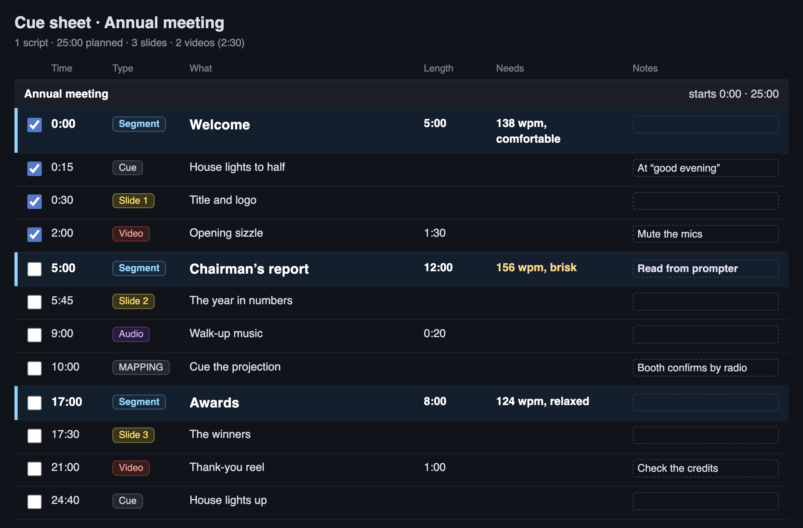
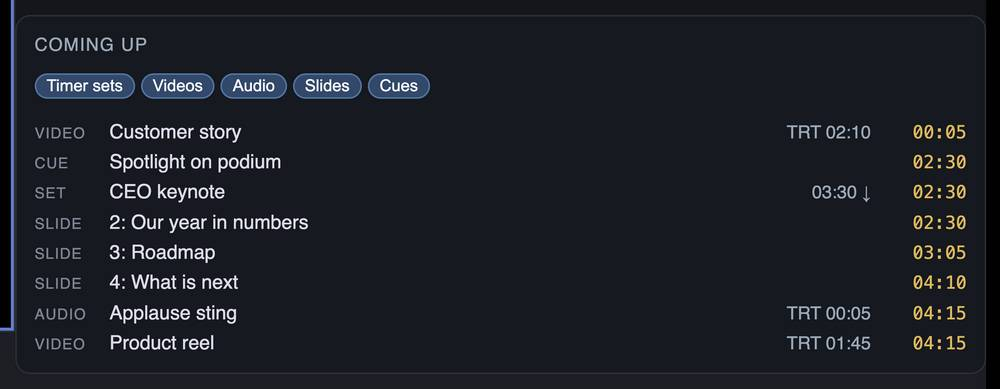
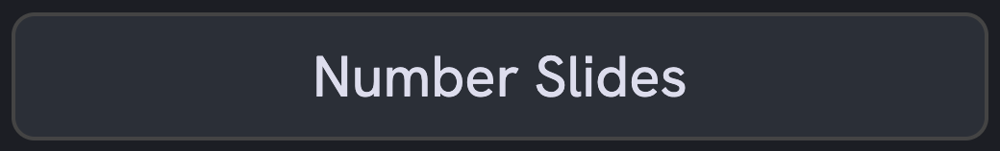
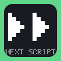

The cue sheet and Coming up
About 4-5 minutesWelcome
Welcome to The Whole Room—
a prompter built to be just as good for the crew behind the scenes as it is for the presenter on stage.
By now, you already know how to prep a script and run a show.
This series is about everyone else in the room.
Sooner or later, the crew is going to ask you two things: how much time is left, and what’s coming up next.
Why hire an operator who can’t tell them?
Just like before, whenever you see YOUR TURN, go ahead and pause to try it out.
The cue sheet
Every single cue you drop into the script automatically becomes a row on the cue sheet.

You’ve got columns for Time, Type, What, Length, Needs, and Notes—
plus a Ready box that turns the entire row red the second someone unticks it.
Better yet, it covers every script in your open runlist.
Because you already took the time to write the cues once,
the cue sheet builds itself—and it’s never out of date.
A producer who gets a clean rundown with zero extra typing is going to remember your name.
You can open the cue sheet anytime from the Collaboration drawer, or from Collaboration, then Cue sheet, in the menu bar. It opens as a tab beside Script.
Save Cue Sheet… exports it straight to a PDF,
and Copy Cue Sheet lets you paste it right into an email.
Toggle on Include Last Run, and it even pulls in the actual times from your last run-through.
Your turn Open the cue sheet. Add a cue to this script, then open the sheet again
Coming up
Right inside the editor, Coming up shows you the next cues in line while you read.

A quick filter lets you pick exactly which types of cues show up—
so you never lose your place in the show,
and neither does anyone looking over your shoulder.
Slide cues even suggest the next slide number automatically,
and Number Slides…

keeps everything cleanly in order after a round of edits.Slides always get shuffled around the night before—
this keeps your numbers honest.
Your turn Find Coming up in the editor and change which kinds it shows
When you’re ready, press

for the next module.


 , press Open the Stream Deck tab, and your deck appears on screen, one page at a time.
, press Open the Stream Deck tab, and your deck appears on screen, one page at a time.